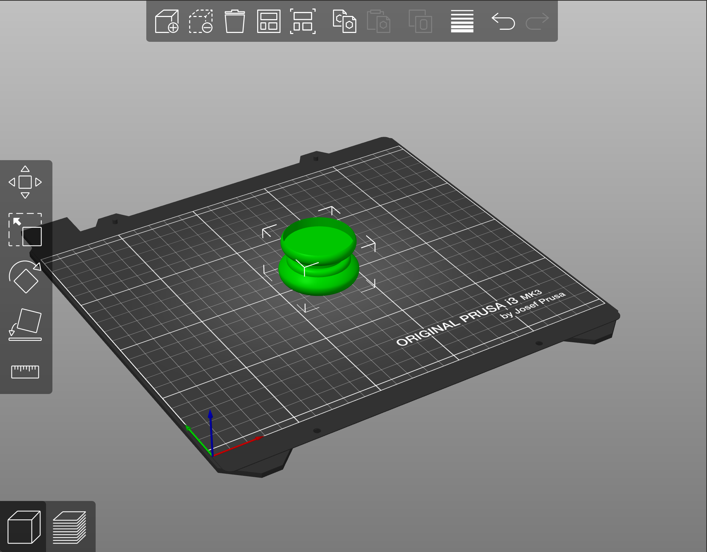
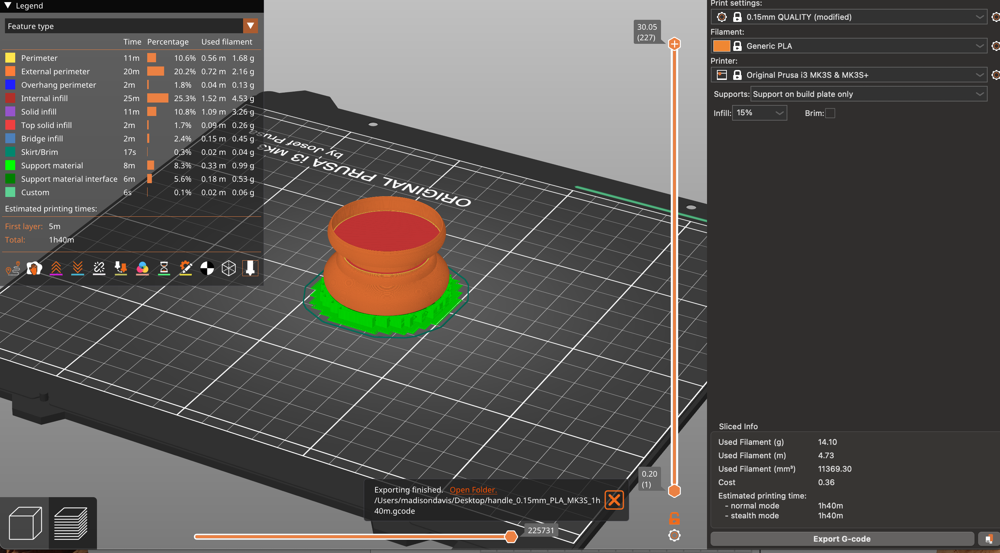
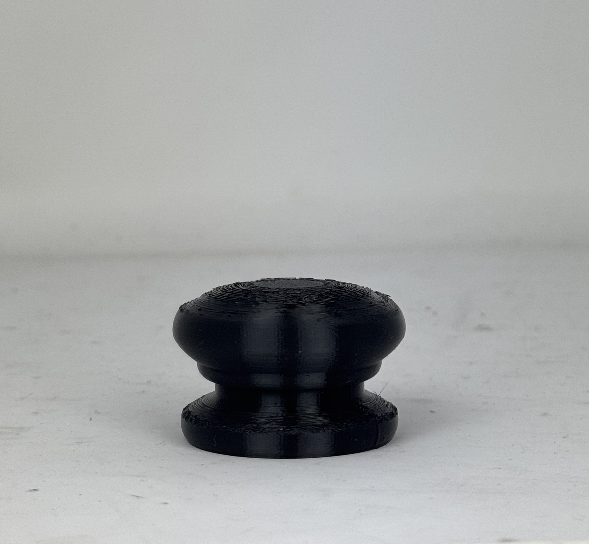
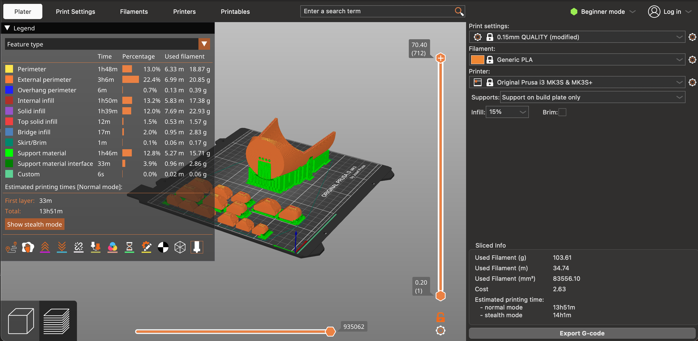

<div class="textcontainer">
<p class="margin"> </p>
<h3>Week 5: 3D Design & Printing</h3>
<p class="margin"> </p>
<div class="flexrow">
<a id="btn" href="./week5.zip" download>Download My CAD + g-Code Files!
</a>
</div>
<p class="margin"> </p>
The files are labeled based on their relevant part (part 1/2/3), as listed below:
<p><br></p>
<h4>Part 1: Design and 3D Print</h4>
This week, we're asked to design and 3D print a part that is more complicated
than with subtractive methods. I decided to focus on one of the final project
ideas I had: constructing a wand. I was inspired off of
<a href="https://www.youtube.com/watch?v=HailNA14bNk&t=447s">this video</a>
and began working on my own design.
<p><br></p>
First, I thought about what main electrical components I need.
After consulting the teaching staff, I needed the following parts:
<ol>
<li>ESP32 Microcontroller</li>
<li>Accelerometer</li>
<li>LiPO Battery</li>
</ol>
<p><br></p>
I gathered up these materials and used a caliber to measure the combined length,
largest width, and largest height:
<p><br></p>
<img class="center_image" src="caliber.HEIC" alt="caliber">
<p><br></p>
Here were my results:
<ol>
<li>Combined length: 57.1 + 20.4 + 21 = 93.1 mm</li>
<li>Largest width: 28.3 mm (ESP32)</li>
<li>Largest height: 13 mm (ESP32)</li>
</ol>
<p><br></p>
With these calculations, I opened Autodesk fusion to design my wand. The
wand has four main parts:
<ol>
<li>Main, Bottom: a half-cylinder where all the circuitry would go</li>
<li>Main, Top: a half-cylinder acting as a cover for the circuit</li>
<li>Handle: a doorknob-looking end to the wand, for fastening</li>
<li>Tip: a decorative piece for the other end, to make it look like a wand</li>
</ol>
<p><br></p>
<div class="img-container">
<img src="wand1.png">
<img src="wand2.png">
</div>
<p><br></p>
Here are all the parameters of the wand, as well as some photos of the
wand. The parameters were based on my measurements so that the
circuit would fit within the main cylindrical-shaped container.
'main circuit' refers to the cutout within the cylinder for the circuitry.
'main wand' refers to the overall cylinder-shape that holds the circuit.
<p><br></p>
<table class="myTable">
<tr><th>Name</th><th>Value (mm)</th>
<tr><td>main_wand_diameter</td><td>40</td>
<tr><td>main_wand_length</td><td>130</td>
<tr><td>main_circuit_width</td><td>28</td>
<tr><td>main_circuit_length</td><td>100</td>
<tr><td>handle_diameter</td><td>40</td>
<tr><td>handle_length</td><td>33</td>
<tr><td>tip_length</td><td>150</td>
</table>
<p><br></p>
I don't want to print out the entire thing at this moment, as
I want to ensure I like the size dimensions first.
The total length is about 300mm, or 11 inches.
The diameter is 40mm, or 1.57 inches.
If you know anything about Harry Potter, most of their wants are between
9-15 inches and a diameter of 1 inch, so in theory, the print
should feel reasonably realistic/not too big. Therefore, I am only
going to print the handle for now.
<p><br></p>
In Autodesk, I saved the handle body using 'Save Mesh'. This automatically opens
up PrusaSlicer for me. If you don't have Prusa, download it for your OS and
select the appropriate Prusa model you will be using. Shown below is how
my handle looks in Prusa. I made the following edits once in Prusa:
<ol>
<li>Rotated the handle so that the end of the handle is on the base</li>
<li>Selected 'General: PLA' for material</li>
<li>Selected 'Infill: 15%' for infill</li>
<li>Selected 'Support on build plate only' to allow for better printing</li>
</ol>
<p><br></p>
<div class="img-container">
<p></p>
<p></p>
</div>
<p><br></p>
Once this was done, I simply saved it as a g-code file, placed the file on an
external drive, and then inserted that drive into my Prusa hardware.
Ensure you are using the correct filament for the Prusa (one way you can tell is based on
the heat-parameter: if the parameter is 215 degrees F, you chose PLA correctly).
<p><br></p>
Now, here is the finished product!
<p><br></p>
<p></p>
<p><br></p>
Joey and I also began work on 3D printing some of the hand-model we want to do
for Week 9: Radio Communication. Here is part of the model we are printing this
week. Feel free to download the .gcode file for these specific parts using
the button at the top of this page.
<p><br></p>
<p></p>
<p><br></p>
<h4>Part 2: Revopoint 3D Scan</h4>
Here, we were asked to scan an item. I heard fluffy things were harder, and
wanting a challenge with my absurd collection of alpaca plushies, I decided
to scan my tiniest alpaca Toast using a Revopoint.
<p><br></p>
First, I set up the environment to allow me to get a good scan. I used proper lighting
and a turning-board to help me move the object. I put Toast on a rotatable board.
<p><br></p>
<div class="img-container">
<img src="part2_alpaca2.HEIC">
<img src="part2_alpaca1.HEIC">
</div>
<p><br></p>
Next, I turned on the RevoScan5.4.1 software to begin a scan.
I did two main scans. After doing one scan, one must click 'Fuse' to
consolidate the points. I did 0.18 in size for the points, where the smaller
value allows for more fine-grained details. Here were the results:
<p><br></p>
<div class="img-container">
<img src="part2_trial1.HEIC">
<img src="part2_trial1pt2.HEIC">
</div>
<p><br></p>
I then used the poly tool to delete some of the floor.
Once this was cleaned up, I tried to merge thw two scans:
<p><br></p>
<img class="center_image" src="part2_trial1pt3.HEIC" alt="result">
<p><br></p>
Sadly, it could not merge due to the overlap being less than 10%.
I decided to redo the smaller scan to make it larger.
Here was the second attempt:
<p><br></p>
<img class="center_image" src="part2_trial2.HEIC" alt="result">
<p><br></p>
Even with more scans, the overalp still was not enough. I attributed
this to the fact the points were too 'cloudy' for the software to recognize.
My third attempt was to stick with one scan and keep 'adding' to it by
resuming the scan to get bald spots. Here was the final result!
Feel free to download the revo file using the button at the top of the page.
<p><br></p>
<img class="center_image" src="part2_trial3.HEIC" alt="result">
<p><br></p>
<h4>Part 3: Final Project</h4>
Finally, we are asked to put down more information about our final project.
My final project is a wand-controlled lamp light over Bluetooth.
The lamp will be based on <a href="https://www.thingiverse.com/thing:19104">this</a> intricate design.
The wand I will hand-design. Shown below is a finalized 3D model of the wand:
<p><br></p>
<img class="center_image" src="wand1.png" alt="wand">
<p><br></p>
Here is my bill of materials:
<ol>
<li>2x ESP32 Microcontroller</li>
<li>2x LiPo battery</li>
<li>1x LED</li>
<li>8x wires (4 for VIN/GND, 4 for connecting LED and accelerometer)</li>
<li>PLA Filament for 3D prints of wand and lamp</li>
</ol>
<p><br></p>
Here is my timeline:
<ol>
<li>Week 5 (3D Printing): Create model of wand and print out handle.</li>
<li>Week 6 (Electronic Input): Print out bottom of wand. Get comfortable with accelerometer data as an electronic input</li>
<li>Week 7 (Electronic Output): Print out top of wand and try Bluetooth connection with accelerometer as data between two microcontrollers (one on wand, one for hypothetical LED circuit)</li>
<li>Week 11 (Project Integration): Print out the tip of the wand. Also, 3D print the intricate holder for LED + microcontroller circuit</li>
</ol>
<p><br></p>
Note that another final project idea was to create a moving arm. I am
pivoting that slightly to a moving hand, based off of <a href="https://www.youtube.com/watch?v=Fvg-v8FPcjg">this video</a>.
I still want to do this, but I will not do it as my final project.
Instead, I will do it during Week 9: Bluetooth with a partner who was also interested.
The idea would be to have two microcontrollers talking via Bluetooth. One senses movement
with a glove, and the other responds by controlling servos in the 3D printed hand.
Specifically, each finger has a sensor on the glove. If the sensor is tightened,
it'll send the signal to the appropriate servo to rotate.
<p><br></p>
This project requires a lot of 3D printing, 8 pieces in total. Therefore, I will handle
this by printing out pieces in the coming weeks. As shown below (and was also
shown in 'Part 1' section), half of these pieces are being printed out this week:
<p><br></p>
<p><br></p>
<p><br></p>
<p><br></p>
</div>